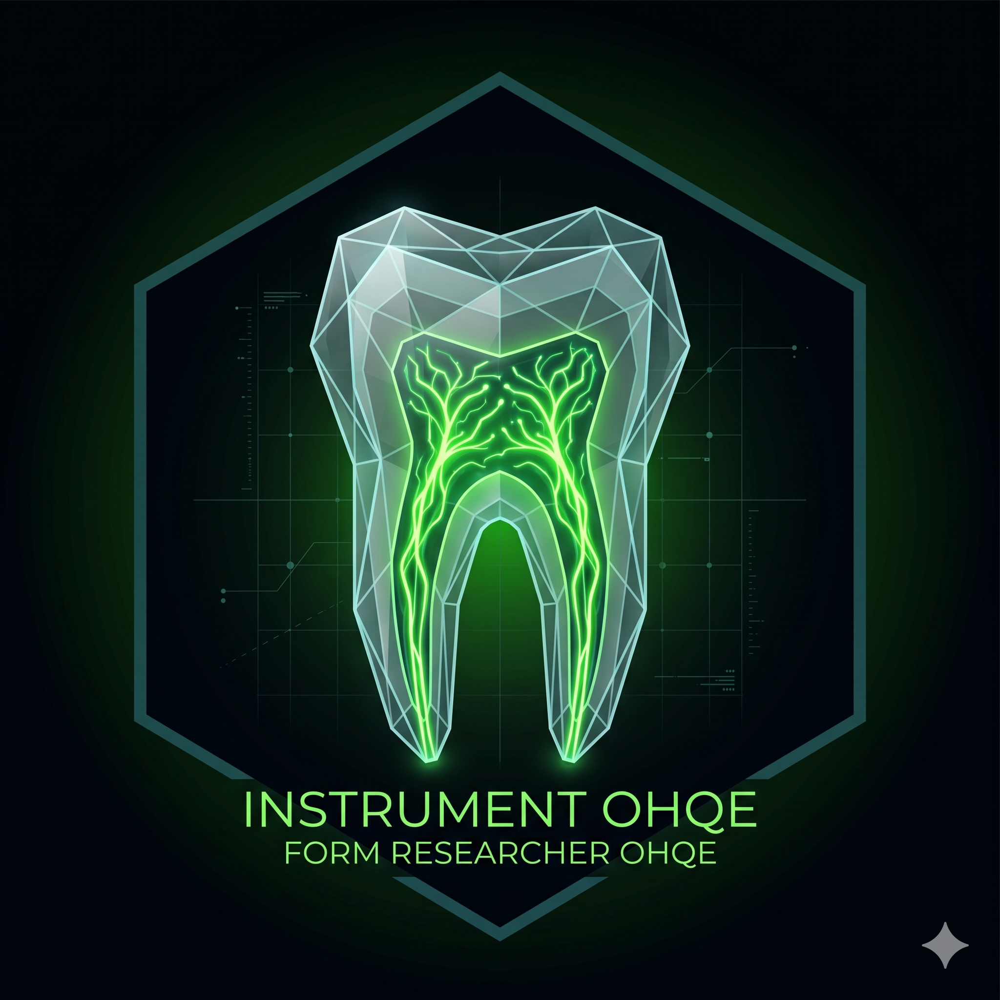

INSTRUMEN OHQE SYSTEM
Menyiapkan Database...

Pilih Tahap Kunjungan Responden
Kunjungan 1
Live Dashboard Data Responden OHQE
| ID Transaksi | Diagnosis | Nama Lengkap | Nomor HP | Gender | Total OHQE | Interpretasi |
|---|
| ID Transaksi | Diagnosis | Nama Lengkap | Skor VAS | Interpretasi VAS |
|---|
| ID Transaksi | Diagnosis | Nama Lengkap | Skor MDAS | Interpretasi MDAS |
|---|
Mesin ini secara otomatis menjalankan *Tests of Normality* untuk menentukan distribusi data, dilanjutkan dengan Uji Beda Parametrik (*Independent T-Test*) atau Non-Parametrik (*Mann-Whitney U*), Descriptives, dan Case Processing.
Data yang dianalisis saat ini dikhususkan pada Skor OHQE.
Mesin ini menguji **Korelasi/Hubungan Nyeri Endodontik (VAS) dengan Kualitas Hidup (OHQE)**. Secara otomatis melakukan Frequency Demografi (Univariat), Uji Normalitas, dan Uji Korelasi Bivariat (Pearson / Spearman).
Mesin ini menguji **Korelasi Kecemasan Dental (MDAS) terhadap Total OHQE dan tiap Subskala OHQE (Fisik, Psikologis, Ekspektasi)**. Sistem akan menampilkan matriks korelasi penuh berdasarkan Uji Parametrik/Non-Parametrik sesuai sebaran datanya.
Ubah seluruh teks kuesioner, opsi, dan keterangan dari sini.
Pengaturan perilaku website dan izin sinkronisasi ke Database Google Sheets.
Atur tombol yang tampil pada halaman awal. Default sistem: Kunjungan 1 ON, Kunjungan 2 OFF, Kunjungan 3 OFF.
Sistem Unggah Foto Periapikal / Panoramik
| ID Transaksi | Nama Lengkap | Diagnosis | Aksi Rontgen |
|---|